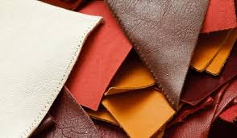
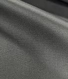
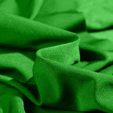

Le coton: Pour produire un kilo de coton, il est nécessaire d'utiliser jusqu'a 10000 litres d'eau. Outre la consomation énorme d'eau lors de la production, près de 95% du coton que les grandes chaines de vètements utilisent viens d'Amérique Latine, plus precisement du Mexique. Pour le remplacé, vous pouvez envisager le Chanvre. Avec une moyen de 400 litres d'eau pour 1 kilo de tissue et une production à 54% francaise, c'est un remplacement abordable et éthique.
Le cuir: Le cuir est évidemment un materiau a completement bannir de votre garde robe. Produit grace à des peau d'animaux. Pour le remplacer, beaucoup d'option s'offrent a vous. Vous pouvez optez pour du cuir de fruit comme le cuir de pomme ou d'ananas. Vous pouvez aussi utiliser du cuir de liège ou d'eucalyptus. Avec un prix qui varie entre 10 et 20euro le mètre.
La soie: Cet matière symbole de luxe est produite en faisant bouillir des vers à soie pour recuperer le fils qu'ils uilisent pour faire leurs cocons. Pour la remplacer, vous pouvez optez pour la viscose. Cette matière produite à partir de de cellulose de bois est trees peu couteuse et la texture est très similaire à la soie.
Le nylon: Le nylon est fabriqué a base de pétrle ce qui l'élimine directement de notre liste de matiériaux éco. Pour le remplacer, il est envisagable de porter de la myxine.La myxine est un tissue produit a partir du mucus d'un serepent de mer. Le mucus est secreter naturellement et sa récuperation de ne fais pas de mal à l'animal.
Le spandex: Le matériau est un tissue fait a base de plastic et donc de pétrole. Il sert pricipalement a faire des vétements de sport. Ce matériau peut etre remplacer par la laine. Récuperer par la tonte de mouton, la laine est un matériau dont la fabrication est naturelle et éthique.
Il existe plein d'autres matériaux qui devrais etre remplacé mais nous vous offrons une base, un début.
-L'option la plus évidente est évidemment de don de vêtement. Cependant, veillez a vous renseigne et verifier vos sources car toute les associations ne sont pas fiables.
-Vous pouvez aussi vous tourner vers les friperies. Cela permet d'etre sur du destin de vos vêtement et vous rassure sur la question des bénéfices fait dessus.
-Dans le même style, vous pouvez rapporter vos vieux vêtement chez des enseignes comme Auchan ou Kiabi, la première proposant des bons d'achat en retour.
-Si votre but est de rentabiliser vos achats, vous pouvez vous tourner vers des platerformes de vente de seconde main.
Pour en apprendre plus sur les associations a qui vous pouvez confier vos vêtements, les platerformes de reventes et les marque de vètements ethique, rendez-vous sur notre appli qui répertorie toutes ces informations.